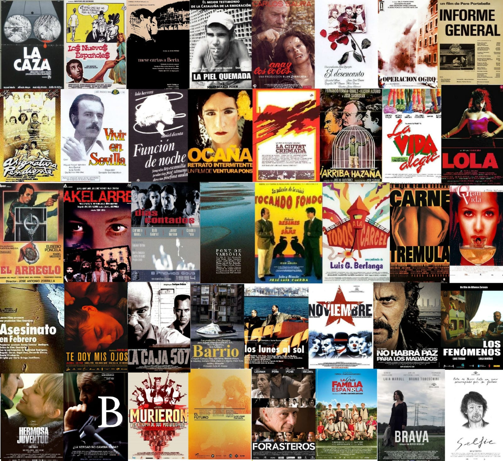

La historia del cine español
Descubre cómo nació el cine en España y cómo ha evolucionado hasta convertirse en una industria reconocida en todo el mundo.
Bienvenidos a Esperpéntico,un espacio dedicado al cine español, sus historias y sus protagonistas. Frente a los tópicos y prejuicios que históricamente lo han acompañado, reivindicamos una cinematografía llena de personalidad, crítica, humor y contradicciones. Porque el cine español, con sus virtudes e imperfecciones, merece mucho más que una etiqueta.
En esta página podrás descubrir películas emblemáticas, conocer a los directores más importantes y recorrer la evolución del cine en España.
Última actualización:
Descubre cómo nació el cine en España y cómo ha evolucionado hasta convertirse en una industria reconocida en todo el mundo.

Conoce algunas de las películas más importantes del cine español, sus directores, sus fechas de estreno y sus géneros cinematográficos.
Disfruta de una selección de imágenes relacionadas con películas, actores y directores que han marcado la historia del cine español.